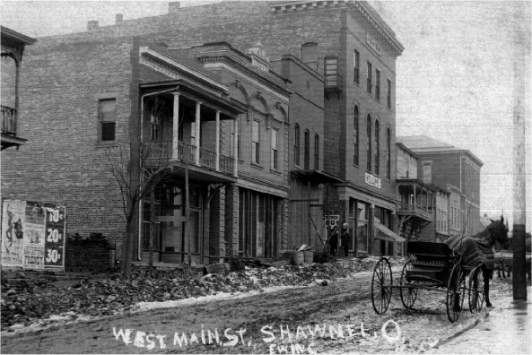
Shawnee is certainly the most unusual and interesting village I have stumbled across while travelling the backroads of southeastern Ohio--or any other part of the country, for that matter. A visit there is an experience you don't easily forget. In fact, I have heard from a number of people who were so impressed by Shawnee's many unique features that they e-mailed me to suggest that I check it out. For my part, I happened to discover it in 1999, while on a trip to New Straitsville in search of the famous still-burning 1884 mine fire. I never did find the underground fire, but I did find one of the oddest Appalachian coal mining villages anywhere. I've since been back on several occasions, often to show the place to new people.
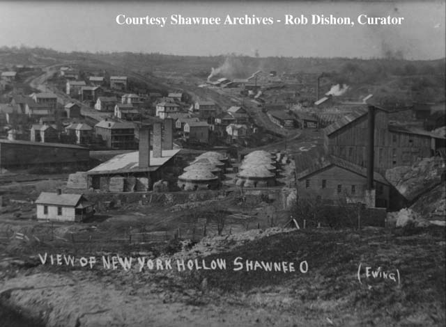
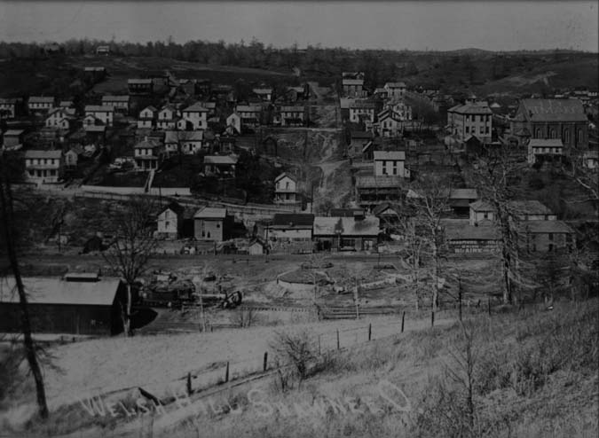
It was founded in 1873 around the coal mines, and for years was the largest town in Perry County. At last count only 742 people lived in Shawnee, and that is a number that is dropping. With less than ten percent of the population it had at its peak, Shawnee is what they call a semi ghost town. Above you can see old photos of two parts of Shawnee that aren't around any longer: New York Hollow and Welsh Hill, where the immigrants who left their last names in southeastern Ohio lived and worked in the mines and furnaces.
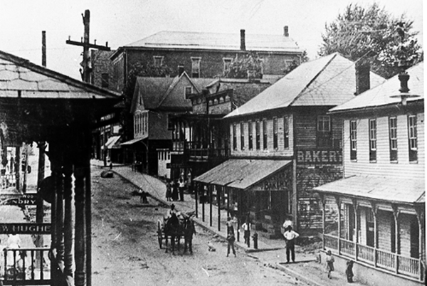
Shawnee seems like a ghost town in many ways. There definitely are people living here--there's a bar, a little restaurant, a library, a post office. There is at least one police officer on duty at any given time in Shawnee; the station is in an old wooden building and the holding cells feature ordinary windows with rusty bars welded across them from the outside.
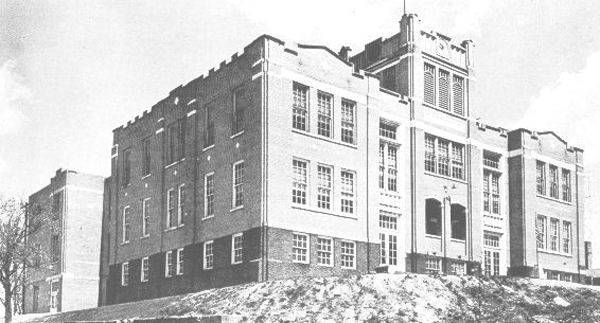
What's so odd about Shawnee, you ask? It's hard to know where to begin. First of all, it's built up the side of a very steep hill, and many of the roads are so precipitously pitched that most of the cars I've owned wouldn't make it. When you come down State Route 93 you see the entire thing spread out on the hill like a model town in a toy railroad diorama. For years, the top of the hill and rear of the town was dominated by the very old public school. The school hadn't been open for many years, but the attached gymnasium was still used as a multipurpose room by the town. Among the quaint features of this very old place were the separate entrances for BOYS and GIRLS; the words were engraved above the doors. Tragically, the school was demolished sometime in 2002. Above and below are old and new photos of the school when it still watched over Shawnee; I took the more recent in spring 2001.
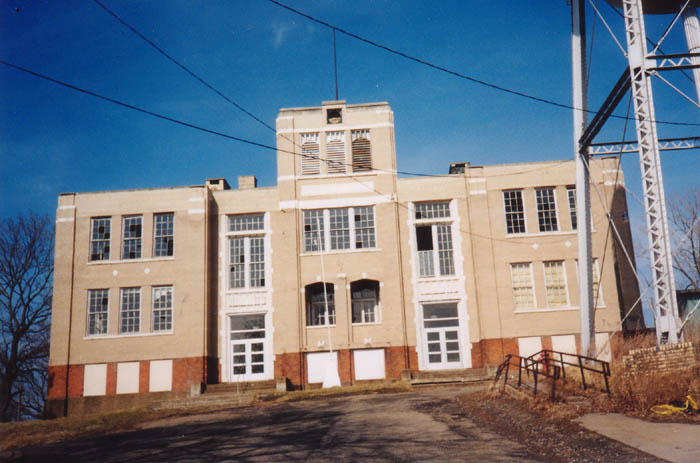
The most distinctive feature of Shawnee's Main Street, which runs along the foot of the hill, is the large number of balconies and awnings attached to the storefronts and houses. It gives the whole place a very bizarre, surreal look.
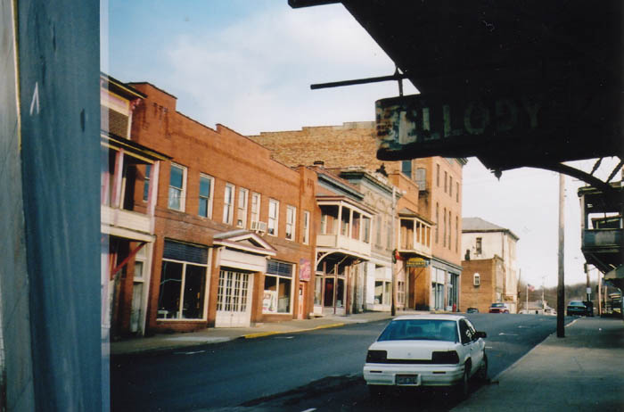
Cats love Shawnee--or maybe it's the other way around. When we visited several times not long ago we saw dozens, and almost picked one up because we thought it was a stray. (It turned out to belong to an apartment nearby.)
The town is also cluttered with abandoned buildings. Although a quick look at census.gov tells us that housing vacancy in Shawnee is only 11.9%, I would estimate conservatively that half of the buildings in the downtown section are empty and boarded up. The 2000 Census also shows the population in Shawnee to be 608, down 134 from the previous total. 605 of them are white, one is "more than one nationality," and two are Asian--one Filipino, the other Japanese.
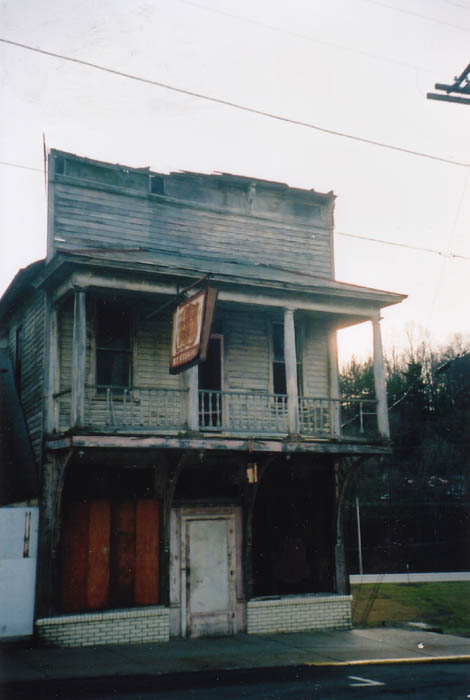
Above you see a former ice cream place/restaurant. There's a closed-down Whirlpool appliance retailer, an old bar, a large theater (the tallest building in town) complete with boarded box office, and a few other anonymous storefronts. There are businesses which are still open: a bar is the most prominent, since it stays open long into the lonely night, but there's also a library, a post office, a furniture store, a small restaurant, and a couple of what look like junk shops. Below is another one of the abandoned stores: the Williams Insurance Agency.
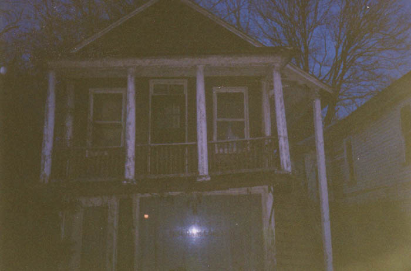
The Williams Agency is the only abandoned building in Shawnee I've ever been inside of, and I only made it into the apartment above the shop. In the spring of 2001 we made several night trips to Shawnee. On one of these we climbed the side staircase on the Williams building and went in through an open door.
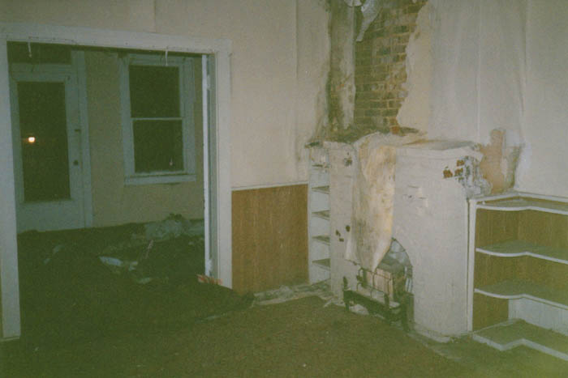
Inside was a nice little apartment with high ceilings and a fireplace and built-in shelves. At the front of the place the double doors were open and I braved the fragile balcony long enough to take this picture.
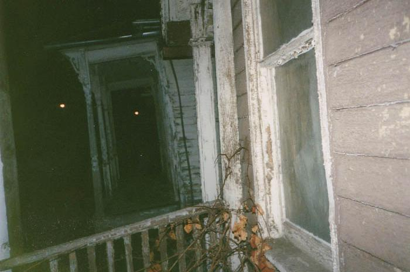
In the living room we came across old checkbooks and paperwork from the late 70s. The kitchen and bathroom were trashed, of course, but there was a lot of stuff left--bottles of cleaning products, dishes, pots and pans, a bar of soap.
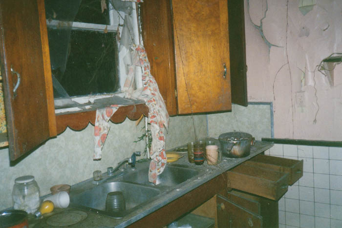
The bathroom was the room furthest back, and it was at ground level because of the way the buildings on Main Street are set into the hill.
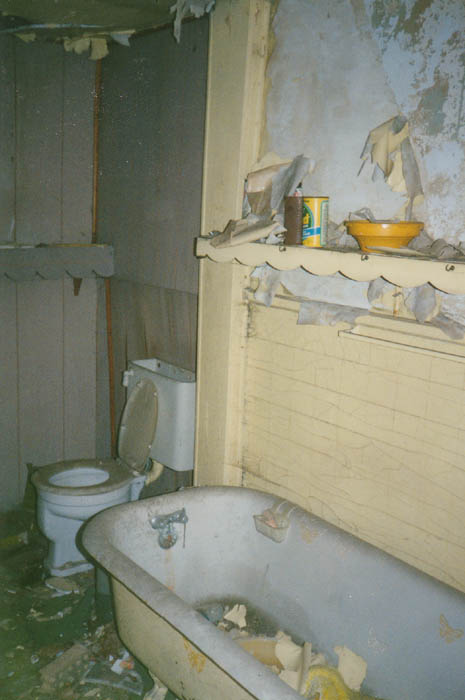
Shawnee is obviously on the rocks economically. Employment here in Perry County is extremely low, and it is a sharp contrast to the situation here one hundred years ago. The intervening decades saw a precipitous decline in population and, consequently, occupancy of the properties which once served coal miners and mill workers.
However, in the midst of all this vacancy and neglect, there are still signs of community. A few are prominent when you first enter Shawnee from Route 93.
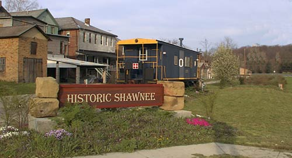
On the left, painted onto the back of the town's only restaurant, you'll find a colorful, surreal mural done by local kids under the guidance of art teacher Geoff Schenkel. Similar murals have been done in the towns of Harmar and Trimble; to read more about the project visit its website here.
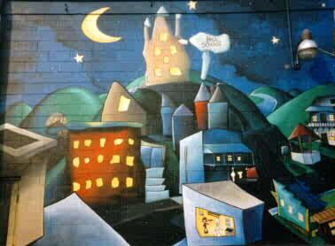
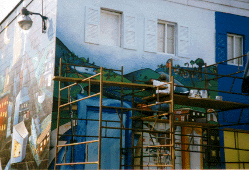
The mural offers sort of a Beetlejuice version of the town, complete with the now-demolished school at the top of the hill. Above is a dark blue sky full of clouds and stars and a crescent moon.
There's also a small park with a gazebo near the bar, and a restored train car on a decorative siding. These touches mesh oddly with things like the abandoned stores, the steep and narrow brick alleys, the foundation of a church which burned years ago. It's this contrast which gives Shawnee its truly unique ambience.
Little Cities of Black Diamonds: Shawnee
Perry County Tourism: Shawnee
The Shawnee Mural Project
Back
forgottenohio@yahoo.com
* Several of these photos appear courtesy of Yeti.